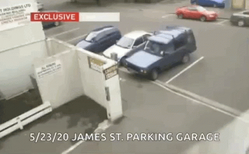
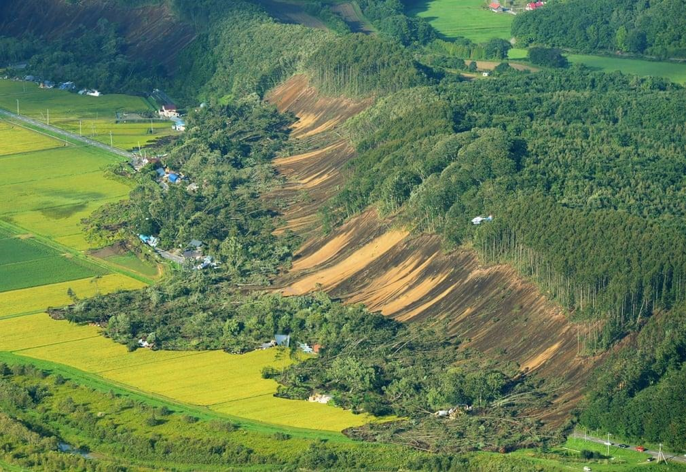
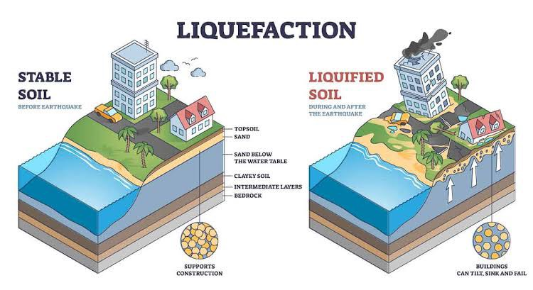
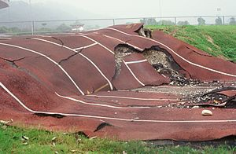
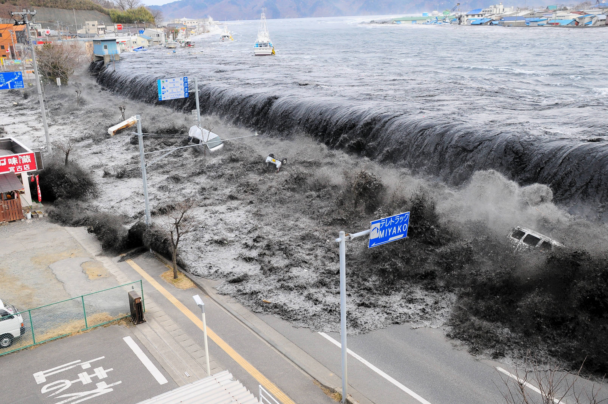

Earthquake Hazards Overview
The Philippines lies along The Pacific Ring of Fire, the ring of Fire is a roughly 25,000-mile chain of volcanoes and seismically active sites that outline the Pacific Ocean. According to the Philippine Institute of Volcanology and Seismology (PHIVOLCS), our country
experiences an earthquake every day but the magnitude is quite low for us not to feel it.
Earthquake hazards include any physical phenomenon companied with an earthquake that may produce adverse personal effects on natural activities. It's good to know the difference between hazard and risk. Hazards are natural phenomena that might impact a region, anyhow of whether there's anyone around to experience them or not. Risk refers to what we stand to lose when the hazard occurs; it's what we've constructed that is threatened. Risk can be
generally, be measured in dollars or casualties, Hazard is generally measured in further physical units energy, shaking strength, depth of water inundation,etc.
In Pasig City, two barangays are in this West Valley Fault line. These are barangay Ugong and Bagong Ilog.
West Valley Fault Line is an unnoticeable line that passes through the area of Bulacan and Laguna including Metro Manila. The “ Big One ” is the movement of the West Valley Fault Line conceivably generating a magnitude 7.2 earthquake.
Primary Earthquake Hazards

Ground Shaking
Disruptive up, down, and sideways vibration of
the ground during an earthquake.
Effects: ground shakings are damage or collapse
of structure; may consequently cause hazards
such as liquefaction and landslide.

Earthquake - Induced Landslide
The downslope movement of rocks, solid, and other debris commonly triggered by
strong shaking.
Effects: erosion; burial and blockage of roads and
rivers.
View Project

Liquefaction
Liquefaction takes place when loosely packed, water-logged sediments at or near the ground surface lose their strength in response to strong ground shaking. Liquefaction occurring beneath buildings and other structures can cause major damage during earthquakes.
Fullscreen.

Surface Rupture
Surface rupture is an offset of the ground surface when fault rupture extends to the Earth's surface. Any structure built across the fault is at risk of being torn apart as the two sides of the fault slip past each other.

Tsunami
A tsunami is a series of waves in a water body caused by the displacement of a large volume of water, generally in an ocean or a large lake. Earthquakes, volcanic eruptions and other underwater explosions above or below water all have the potential to generate a tsunami.
See more.
Thank You!
{kind=link}
{kind=link}
{kind=link}